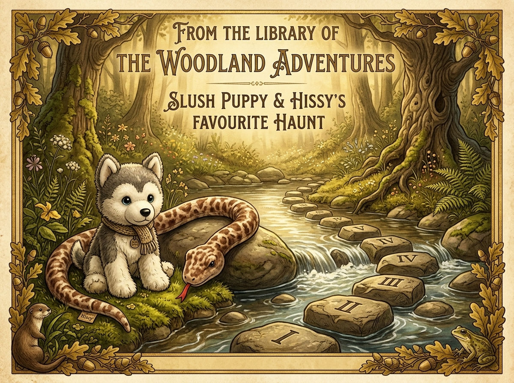
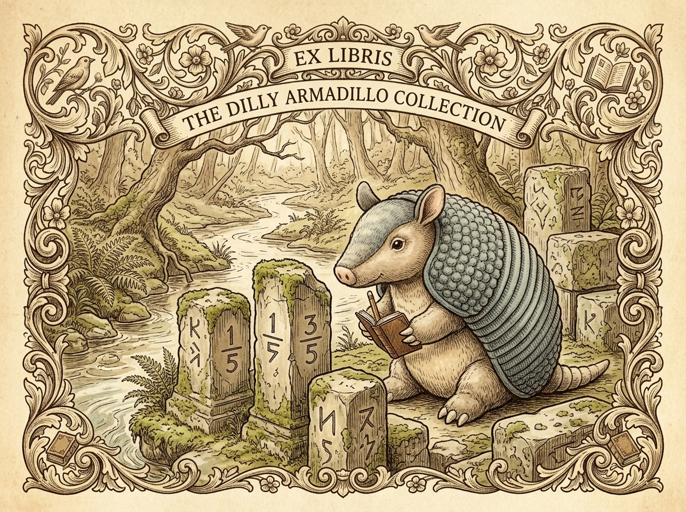
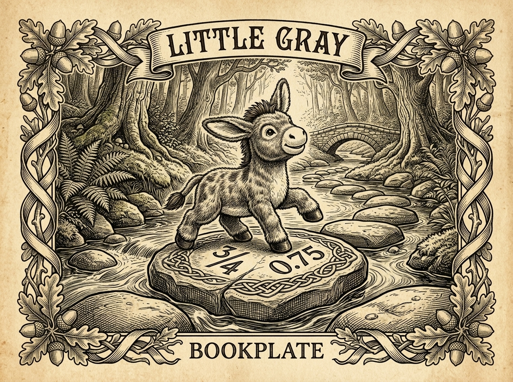
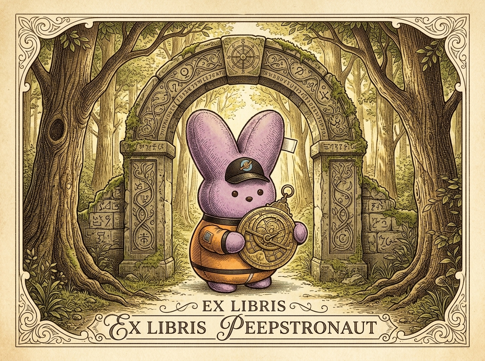

Wherein Five Explorers Encounter One Another and Master the Art of Converting Fractions to Decimals
The morning sun cast long, golden shafts of light across the forest trail when Slush Puppy, the experienced trail leader, trotted up to the banks of Pebble Creek. Standing beside the rushing water was Hissy, a brave and friendly serpent who had been exploring the wild mossy rocks. In the middle of the stream lay a series of ancient stone tablets embedded in the water, each carved with mysterious numbers. To step across safely, one had to match each stone engraved with a fraction to a corresponding pillar engraved with its equivalent decimal value.

"Good morning, traveler!" hissed Hissy cheerfully, coiling his long python body along a smooth boulder. "I've been examining these stones. The first pillar is marked 0.5, but the stepping stone in front of me says ½. Are they the same amount?"
Slush Puppy gave an encouraging nod. "Indeed they are! To convert a fraction like ½ into a decimal, we want to express it in terms of tenths or hundredths. Since 2 multiplies by 5 to make 10, we multiply both the top and bottom by 5, giving us 5⁄10, which is written in decimal form as 0.5."
Fraction to Decimal Conversion (Tenths & Hundredths):
½ = (1 × 5) / (2 × 5) = 5⁄10 = 0.5
¼ = (1 × 25) / (4 × 25) = 25⁄100 = 0.25
Hissy stretched his tail gracefully to press the stone marked ½ against the pillar marked 0.5, and with a soft click, the first stepping stone rose securely out of the water!
As the two friends watched the waters settle, a rustle came from the ferns. Out stepped Dilly, the armadillo. She carried her measuring calipers and notebook, examining the second set of pillars with deliberate, thoughtful care.

"Greetings!" said Dilly warmly, brushing dust from her blue-grey corduroy shell. "I am not quite a master at these ancient locks, but I am certainly no novice either. The second lock requires us to match 1⁄5 and 3⁄5 with their decimal counterparts. Let us work through it step by step."
Dilly took out her pencil. "Since our denominator is 5, we can easily change it into tenths by multiplying by 2. Thus, 1⁄5 becomes 2⁄10, which is 0.2. And 3⁄5 becomes 6⁄10, which is 0.6."
Converting Fifths to Decimals:
1⁄5 = (1 × 2) / (5 × 2) = 2⁄10 = 0.2
3⁄5 = (3 × 2) / (5 × 2) = 6⁄10 = 0.6
"Brilliant calculation, Dilly!" praised Slush Puppy. Dilly carefully pushed the stones, and two more stepping stones locked into place across the stream.
Just then, a joyful trotting sound echoed down the path. Little Gray, the playful plush donkey, came bustling down the trail, eager to help! In his excitement, he trotted right underfoot, almost bumping into Dilly's notebook.

"I can help! I can help!" brayed Little Gray happily, wiggling his long fuzzy ears. "Look at that big pillar over there—it says 0.75! But my stepping stone says ¾. I tried dividing 3 by 4, but I got stuck!"
Hissy slithered over gently and gave Little Gray a reassuring nudge. "Do not worry, Little Gray! Think of a whole dollar divided into four quarters. One quarter is 25 cents (0.25). Three quarters would be three times 25 cents!"
Little Gray's eyes lit up. "Three times 25 is 75! So ¾ is equal to 75 hundredths, or 0.75!"
Converting Decimals Back to Fractions:
0.75 = 75⁄100 = (75 ÷ 25) / (100 ÷ 25) = ¾
0.40 = 40⁄100 = (40 ÷ 20) / (100 ÷ 20) = 2⁄5
With a proud hop, Little Gray placed his hoof on the ¾ stone, matching it to 0.75, and the final stepping stone clicked firmly into position!
Before the team could step across, a soft hum filled the air. Descending gently from above came Peepstronaut, the observant cadet astronaut, wearing his bright orange flight suit and cap. He held a small brass navigational gauge.

"Greetings, crew!" chirped Peepstronaut, staring intently at the master archway at the end of the bridge. "My flight computer displays fuel levels in tenths and hundredths. The archway requires us to verify five equivalencies to unlock the final gate:"
The Five Key Conversion Pairs to Remember:
1⁄10 = 0.1 | 1⁄5 = 0.2 | ¼ = 0.25
½ = 0.5 | ¾ = 0.75
Together, the five new friends worked as a unified team. Slush Puppy led the strategy, Hissy pointed out the path, Dilly measured the values with care, Little Gray eagerly pressed the stones, and Peepstronaut confirmed the readout on his gauge.
With a triumphant rumble, the ancient stone gate swung open, revealing a sunlit meadow of endless new trails to explore. The five companions smiled at one another, knowing that their journey had only just begun.